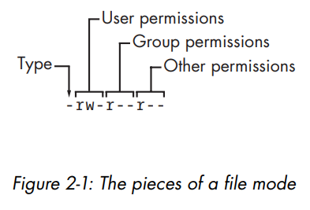
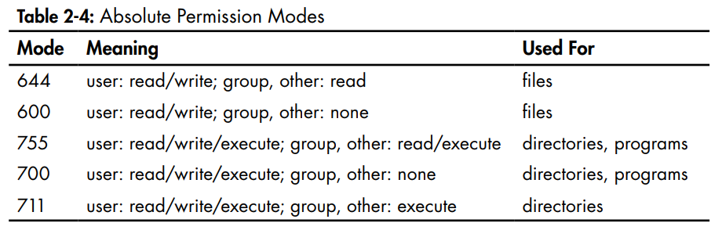

How do you initialize a new VM using vagrant?
mkdir localusers //This will create a new directory
cd localusers //Change you current location to that newly created directory
vagrant init jasonc/centos7 //Use the custom box you downloaded earlier to create the VM
vagrant up //Bring the VM up
vagrant status //Check the status of the machine, it should be running
vagrant ssh //ssh into the Linux machine you just created
cd /vagrant //Your /vagrant => C:/Users/rajga/.../localusers (i.e. /vagrant on your VM is
mapped to C:/Users/rajga/.../localusers on your host machine)
ls -l
> -rwxrwxrwx 1 vagrant vagrant 3090 Aug 11 15:50 Vagrantfile
//The VagrantFile is the config file that was created by running vagrant init command
This completes the process of creating a new VM.
What does
-rwxrwxrwx 1 vagrant vagrant 71 Aug 11 18:24 luser-demo01.sh
stand for?
- In the next example we are creating a shell script. When we run the following:
ls -l //we get..
-rwxrwxrwx 1 vagrant vagrant 71 Aug 11 18:24 luser-demo01.sh
- Every Unix file has a set of
permissions that determine whether you can read,
write, or run the file. Running
ls -l displays the permissions.
- Consider the following:

- The entire sequence is known as the
mode of the file.
- The first character of the mode is the file type. A dash (-) in this position, as in the example, denotes
a regular file, meaning that there's nothing special about the file. This is by far the most common kind of
file.
Directories are also common and are indicated by a
d in the file type slot.
- The rest of a file's mode contains the permissions, which break down into
three sets:
user,
group, and
other, in that order. For example, the rw- characters
in the example are the user permissions, the r-- characters that follow are the
group permissions, and the final r-- characters are the other permissions.
-
r means the file is readable
-
w means the file is writable
-
x means the file is executable (you can run it as a program)
-
- means nothing
- The user permissions (the first set) pertain to the user who owns the file.
- The second set, group permissions, are for the file's group. Any user in that
group can take advantage of these permissions. Use the
groups command to see which group you
belong to.
- Everyone else on the system has access according to the third set, the other permissions, which are
sometimes called
world permissions.

- The way these number are assigned is, think of them as follows:
-
r means a value of 4
-
w means a value of 2
-
x means a value of 1
If you want to assign a file all
rwx permissions, you would do 4+2+1=7. Similarly, for only
r-x, you would do 4+0+1=5.
How do you change the permissions on a file?
-
chmod 755 luser-demo01.sh
- The
-rwxrwxrwx bits specify the permissions on the file "luser-demo01.sh".
- But changing the user permissions is not going to change the permissions. It would still be
-rwxrwxrwx
- That happens when the host file system doesn't support Linux file permissions. Because /vagrant is shared
with the host OS and permissions can't be set on the file, it's displayed as having full permissions for
everyone no matter what.
- Normally, you would want your shell scripts to have the permission 755.
- And to run it you would do:
./luser-demo01.sh
-
. means the current folder.
/ is the directory separator.
- Sidenote: What is the difference between:
#!/bin/bash and
#!/bin/bash/
- The "/" would make the shell think you're referencing a directory named bash instead of the binary file.